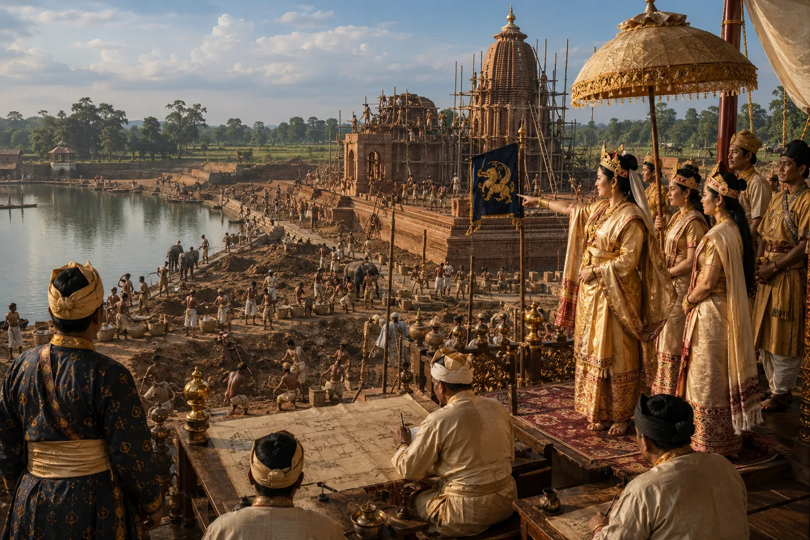

Construction of Sivasagar Tank (Bor Pukhuri) and Shiva Dol
1734 · The Tungkhungia kings

Queen Ambika excavates the monumental 257-acre Sivasagar tank and erects the 104-foot-high Shiva Dol, one of India's tallest stone temple shikhara towers.
Sources have not yet been catalogued for this record.
People: Ambika, Siva Singha (Sutanphaa)
Open this scene in the interactive archive · Follow this event on MAP